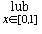

The basic idea that we need to talk about convergence is to find a way of saying when two things are close. A metric space is something in which this makes sense.
Definitions
(that is d: X × X→ R) satisfying the following:
- (Positivity) For all x, y ∈ X, d(x, y) ≥ 0 and d(x, y) = 0 if and only if x = y,
- (Symmetry) For all x, y ∈ X, d(x, y) = d(y, x),
- (The triangle inequality) For all x, y, z ∈ X, d(x, y) + d(y, z) ≥ d(x, z).
A metric space is a set X together with such a metric.
- The prototype: The set of real numbers R with the metric d(x, y) = |x - y|.
This is what is called the usual metric on R.
- The complex numbers C with the metric d(z, w) = |z - w|.
Although the formula looks similar to the real case, the | | represent the modulus of the complex number. The picture looks different too.
- The plane R2 with the usual metric d2 obtained from Pythagoras's theorem.
d2((x1, y1), (x2, y2)) = √((x1 - x2)2 + (y1 - y2)2).
The picture looks similar to the complex numbers case.

- The plane R2 with the taxicab metric d1.
d1((x1, y1), (x2, y2)) = |x1 - x2| + |y1 - y2|.

- The plane R2 with the supremum metric d∞.
d∞((x1, y1), (x2, y2)) = max{x1 - x2|, |y1 - y2|}.
In the above three examples the first two properties of the metric are easy to check. The triangle inequality is a bit harder.Remarks
- To visualise the last three examples, it helps to look at the unit circles. That is the sets {P ∈ R2| d(0, P) = 1 }
- The subscripts on the d's are explained by the fact that there is a whole family of metrics :
dp given by
dp((x1, y1), (x2, y2)) = [|x1 - x2|p+ |y1 - y2|p]1/pfor any p ≥ 1.
If you let p→ ∞ you get the example d∞. - Examples 3. to 5. above can be defined for higher dimensional spaces Rn also. The next two examples show that one can even use them in some infinite dimensional spaces.

- To visualise the last three examples, it helps to look at the unit circles. That is the sets {P ∈ R2| d(0, P) = 1 }
- Let X be the set of all bounded real sequences (x1 , x2 , x3 , ... ). Define a metric d∞ on X by
d∞((x1 , x2 , x3 , ... ), (y1 , y2 , y3 , ... )) = lub{x1 - y1|, |x2 - y2|, |x3 - y3|, ... }.(You had better have the sequences bounded or the lub won't exist.)
This is a metric space that experts call l∞ ("Little l-infinity").
The other metrics above can be generalised to spaces of sequences also.
Let us look at some other "infinite dimensional spaces".

- Let B[0, 1] be the set of all bounded functions on the interval [0, 1]. Then define a metric (again called the supremum metric) by d∞(f, g) = {|f (x) - g(x)|}.
Here is a picture:Although we have drawn the graphs of continuous functions we really only need them to be bounded.
Note that d∞ is "The maximum distance between the graphs of the functions".

- Let C[0, 1] be the set of all continuous functions on the interval [0, 1].
Then define a metric d1 by d1(f, g) = |f (x) - g(x)| dx.
|f (x) - g(x)| dx.
Here is a picture:
Remarks
- Deciding whether or not an integral of a function exists is in general a bit tricky. In this case, however, it is OK since continuous functions are always integrable.
- The hard bit about proving that this is a metric is showing that if d(f, g) = 0 then f = g. For this you need to use the fact that f and g are continuous.
- This last example can be generalised to metrics dp with formulae like:
dp(f, g) = [|f (x) - g(x)|pdx]1/p.
The case p = 2 is particularly important to theoretical physicists and leads to something called Hilbert Space named after the mathematician David Hilbert (1862 to 1943).
- Deciding whether or not an integral of a function exists is in general a bit tricky. In this case, however, it is OK since continuous functions are always integrable.
| Previous page (Some horrible functions) | Contents | Next page (Convergence in a metric space) |